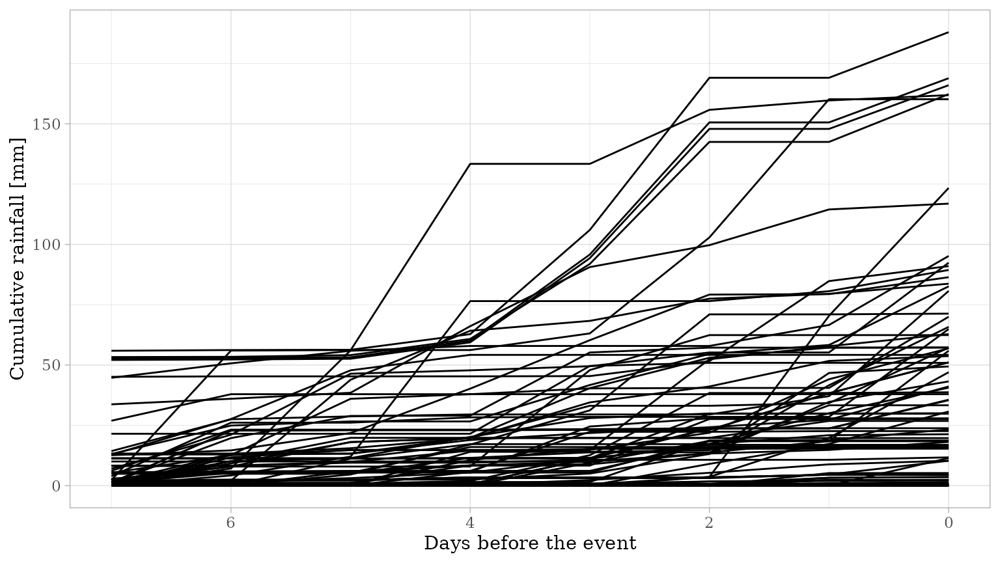
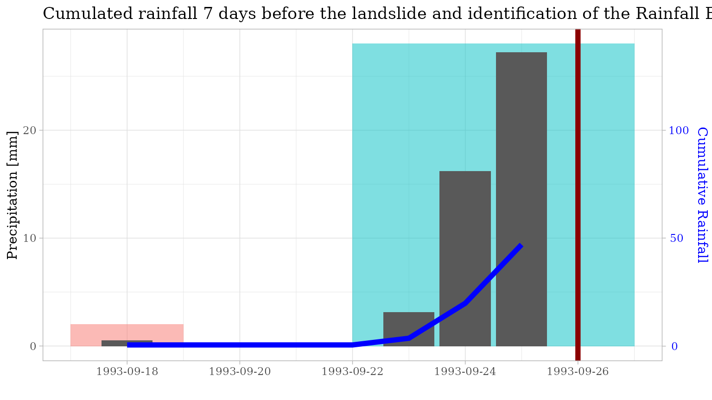
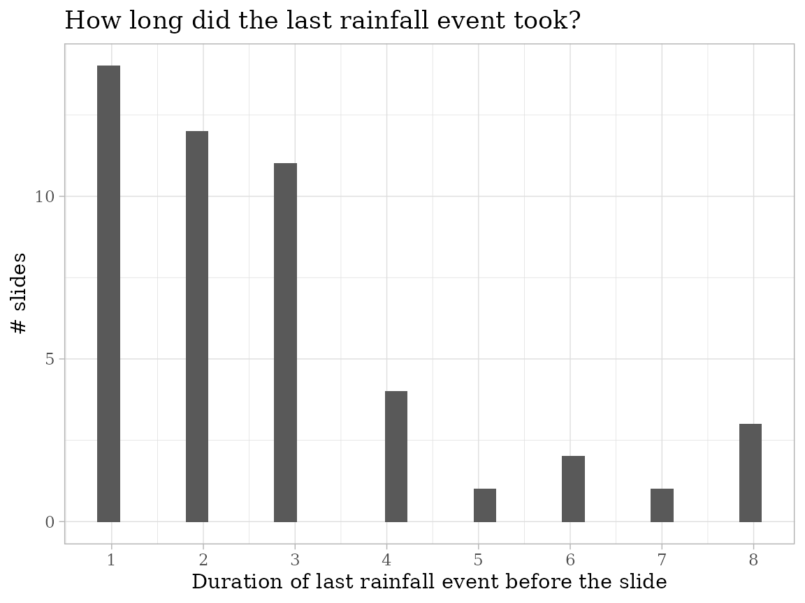

points.Rmd
library(rainfallR)
library(tidyverse)
library(iffitoR)
library(ggforce)
library(ggtext)
library(rainfallR)
library(glue)
library(here)
library(scales)
library(lubridate)
library(sf)
library(stars)
library(raster)We need access to the rainfall data
We need a “spatial object” (points in that case), that hase some temporal daily temporal information. This is important as it only makes sense to extract the daily rainfall data if one has information about the date one wants to extract the data. It would be possible to think about to handle the extraction if the input is a month. However, this is not implemented here.
We use the landslide-data from the iffitoR-package.
library(iffitoR) # comes with the data-object called landsld
# select only the daily data after 1980
# the filtering for the "day" would not even be necessary as the function 'iffi10_same_day' does the same
landsld = landsld[landsld$date_info == "day" & landsld$date > as.Date("1980-01-01"), ]
# select the first 100
landsld = landsld[1:100, ]-It however requires, that there is a column called date
sf with spatial objects that happened on the same day
slides_same_day = iffi10_same_day(landsld)We could now ask for example for the maximim number of slides on one day in all our area of interest.
The number of slides per day is equal to the number of rows per dataframe.
n_slides_per_day = sapply(slides_same_day, nrow)
n = max(n_slides_per_day)
idx = which.max(n_slides_per_day)
sprintf("The maximum number of slides per day in our data is %d", n)
#> [1] "The maximum number of slides per day in our data is 6"
sprintf("They happened on the: %s", as.Date(names(n_slides_per_day)[[idx]], format = "%Y%m%d"))
#> [1] "They happened on the: 1998-02-17"Now we can extract the rainfall data for each date.
The rainfallR-package extracts the data for objects of class sf. So spatical rectangular dataframes.
It was designed so that it can extract the rainfall data, for a dataframe that consists of multiple slide-locations (usually in the column geom), but only for one date.
(Here I’m talking about an sf-object of clas POINT and not about class MULTIPOINT)
This was done because it made it easier to read the large daily NetCDfs only once and extract directly all the data for the multiple slides
That is why we ran the function iffi10_same_day. In order to get all the unique days where slides happened and bring down the computation time.
THIS WORKS (same date, different location)
| slide_id | date | geom |
|---|---|---|
| 1 | “2020-01-01” | POINT (30 10) |
| 2 | “2020-01-01” | POINT (40 10) |
THIS DOES NOT WORK (same location, different date)
| slide_id | date | geom |
|---|---|---|
| 1 | “2020-01-01” | POINT (30 10) |
| 2 | “2020-02-01” | POINT (30 10) |
We thus will iterate over the elements in the list slides_same_day and apply to each element the function ex_rainfall
This function returns a dataframe with nrow(element_of_list) * days_back rows.
We will row-bind these dataframes and so construct one big dataframe
library(doParallel)
#> Loading required package: foreach
#>
#> Attaching package: 'foreach'
#> The following objects are masked from 'package:purrr':
#>
#> accumulate, when
#> Loading required package: iterators
#> Loading required package: parallel
registerDoParallel(8)
start = Sys.time()
res = foreach(
i = 1:length(slides_same_day),
.combine = rbind,
.packages = c("rainfallR",
"magrittr",
"stringr",
"dplyr")
) %dopar% {
# get the date of the slides
date = names(slides_same_day)[[i]] %>% as.Date(., "%Y%m%d")
# the spatial object
spatial.obj = slides_same_day[[i]]
# go thirty days_back. Pray this works
days_back = 7
# this returns a dataframe
rf = rainfallR::ex_rainfall(
data_path = data_path,
spatial.obj = spatial.obj,
fun = NULL, # we are using points
nc_var = "precipitation",
date = date,
days_back = days_back
)
}
#>
#> Attaching package: 'magrittr'
#> The following object is masked from 'package:raster':
#>
#> extract
#> The following object is masked from 'package:purrr':
#>
#> set_names
#> The following object is masked from 'package:tidyr':
#>
#> extract
end = Sys.time()
took = end-start
dim(res)
#> [1] 800 35
# get the first slide
slide = res %>%
filter(PIFF_ID == first(PIFF_ID))
In order to get the rainfall events per slide (in our time of consideration, here 7 days) we will “reconstruct” the rainfall events
As we are working with continous gridded data, we do not need to worry about selecting a rain-gauge based on some criteria as the data is directy “below” the point
The dataframe res now has 800 rows and still 100 unique slides. We can confirm this by 100`
We want to reconstruct the rainfall for each of the unique slides
# we therefore create a list again for each slide
unique_slides_with_cumulated_rainfall = split(res, res$PIFF_ID)and then we can apply the funtion reconstruct_daily_rainfall_events on each element
This function takes as input a dataframe with a column called precip and return also a dataframe with an additional column called event. This column shows the number of the event
One can control the number of days (“The dry period”) which can interleave rainy days (controlled by the argument daily_thresh). Here we set it to 0, meaning that there can’t be any day without less than 0.2 mm rainfall which is part of a “rainfall event”
after the application of the funciton we will stack all the dataframes on top of each other
slides_with_rainfall_event = lapply(unique_slides_with_cumulated_rainfall, function(x){
rainfallR::reconstruct_daily_rainfall_events(x, n = 0, daily_thresh = .2)
})
# stack them
final_df = do.call("rbind", slides_with_rainfall_event)#> `stat_bin()` using `bins = 30`. Pick better value with `binwidth`.